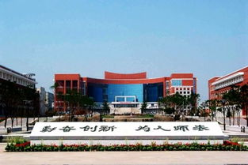

小组详情
核心成员
组长：大天才
副组长：小天才
现有成员：aaa bb ccc dd ee ff......
指导教师：很厉害的老师
发展历程
2006年，入选国家大学生文化素质教育基地。
2007年1月，学校成功承办了第六届亚冬会开幕式文艺演出。5月，国务院转发了《教育部直属师范大学师范生免费教育实施办法（试行）》，东北师范大学担负起了首届免费师范生教育的重任。同年，入选国家教师教育“985工程”优势学科创新平台建设高校。
2010年，被教育部评为“全国毕业生就业典型经验高校”。
2012年7月，吉林省第二个“国务院侨办华文教育基地”在东北师范大学揭牌成立。9月，第一批入选国家级大学生创新创业训练计划。
2015年，首次入选国家“111计划”。
2017年9月，入选首批世界一流学科建设高校名单。
2018年8月，入选吉林省特色高水平大学建设项目应用研究型高校A类，根据方案总目标将加快东北师范大学进入世界一流大学行列
2022年2月14日，教育部公布第二轮“双一流”建设高校及建设学科名单，东北师范大学在列。
防伪标识：2022012226单雨晴